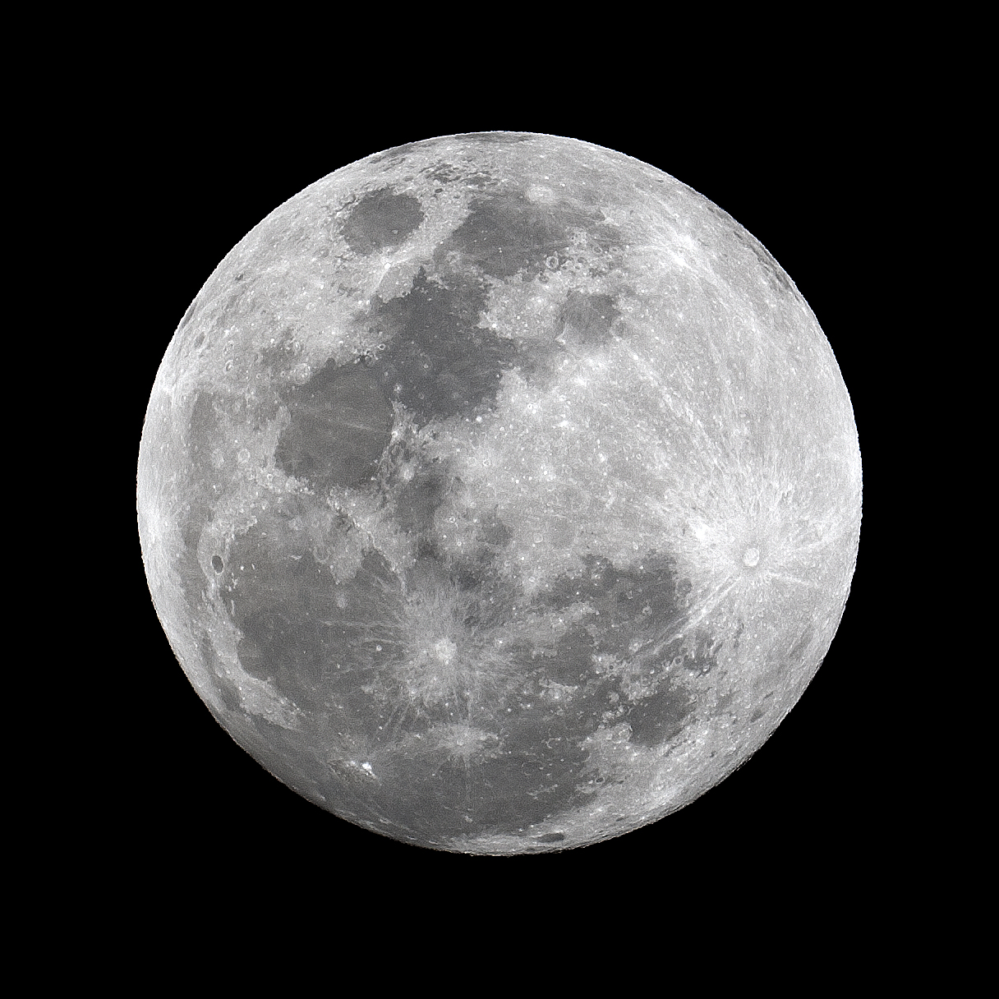
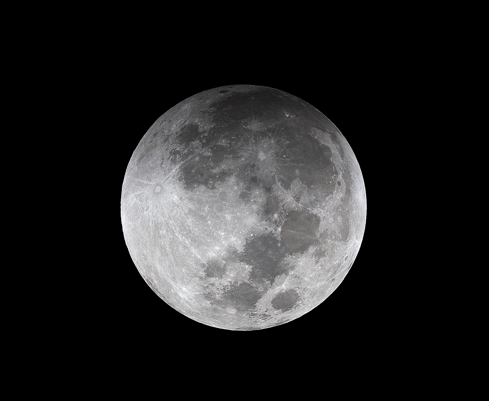
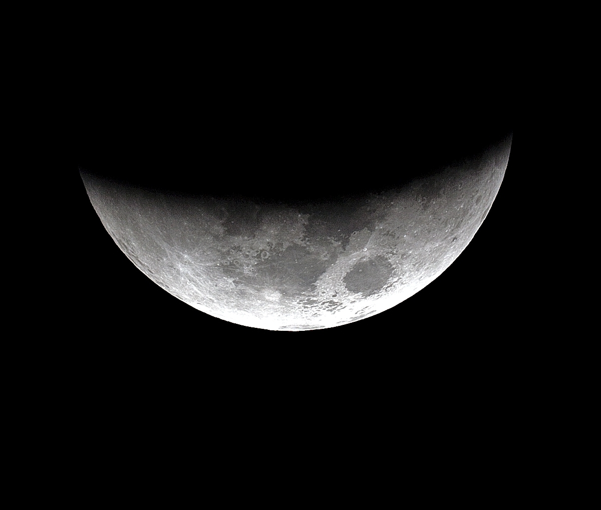
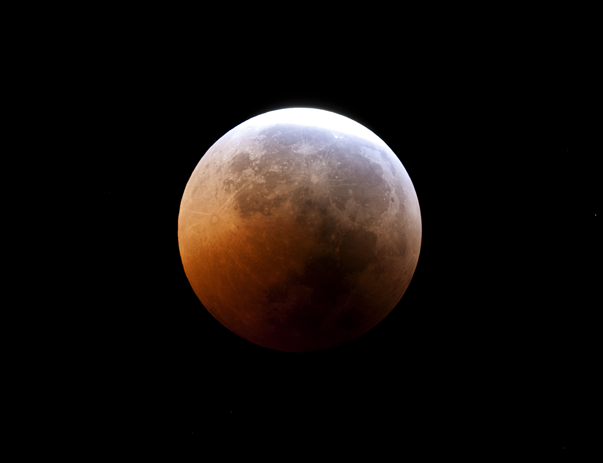
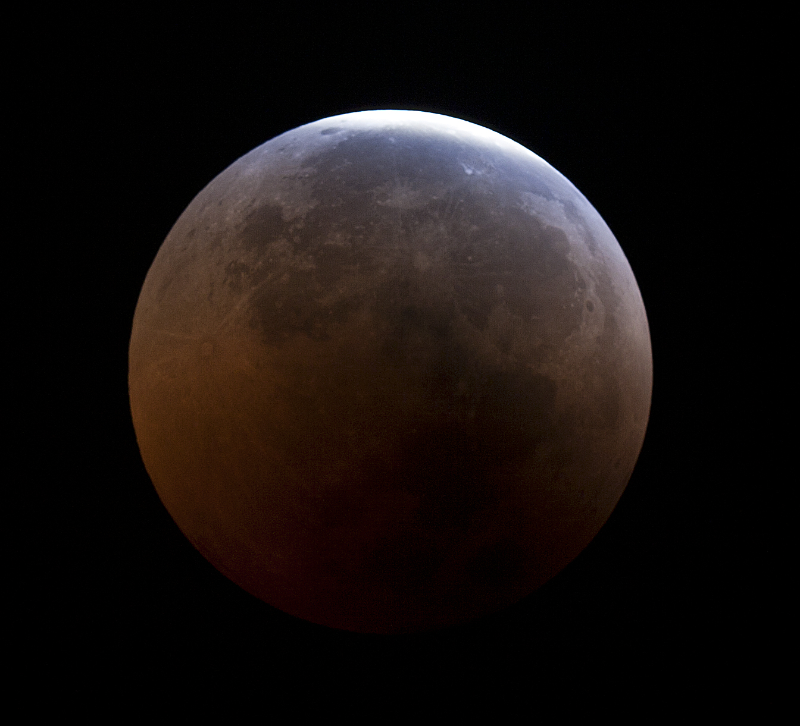
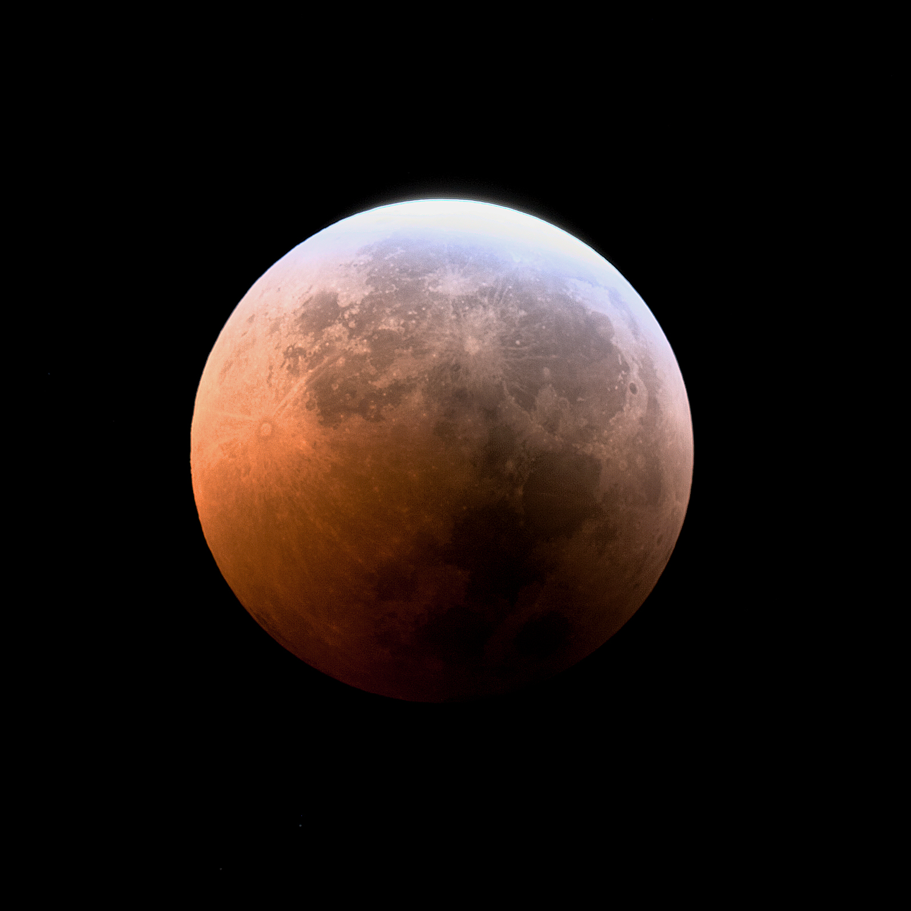

Skip to content
Shenton Park Observatory
Home
Research & Results
Journal archive
Images archive
← Images archive
Lunar Eclipse - June 2011

moon5 · Lunar Eclipse - June 16, 2011

moon1 · Lunar Eclipse - June 16, 2011

moon2 · Lunar Eclipse - June 16, 2011
moon4

moon3

moon6_0 · Lunar Eclipse - June 16, 2011

moon7_0 · Lunar Eclipse - June 16, 2011
×